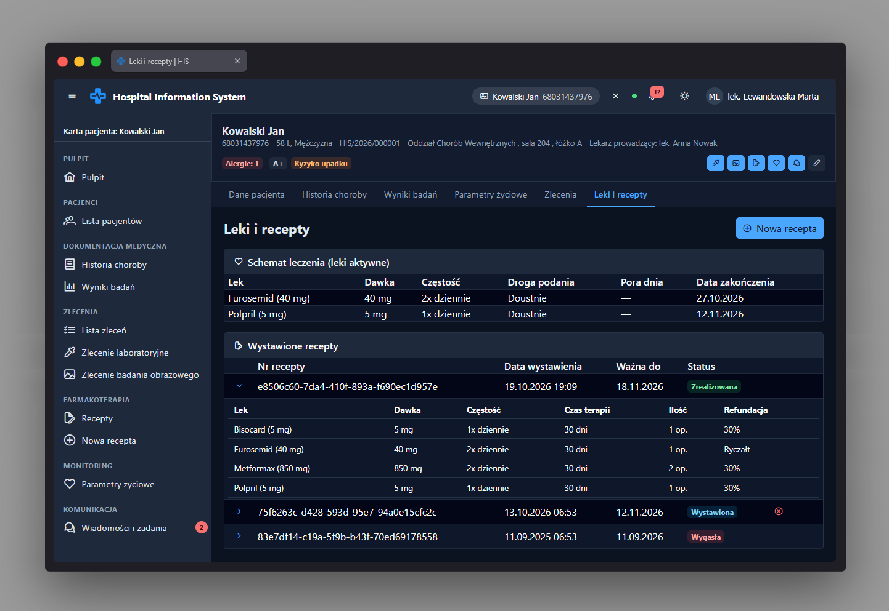

Leki i recepty app-patient-prescriptions-page
Ścieżka
Podstrona karty pacjenta:
Karta pacjenta → Leki i recepty. Dostępna pod adresem
/patients/:patientId/prescriptions jako dziecko
powłoki karty pacjenta /patients/:patientId.
Chroniona przez permissionGuard z uprawnieniem
PRESCRIPTION_READ - rola bez tego uprawnienia nie
może wejść na stronę.
Przeznaczenie
Prezentuje aktualny schemat leczenia farmakologicznego pacjenta (aktywne leki) oraz historię wystawionych recept. Pozwala przejść do kreatora nowej recepty i anulować receptę, która jest jeszcze w statusie umożliwiającym anulowanie.
Strona ładuje dwa źródła danych równolegle
(forkJoin): listę recept pacjenta oraz listę
aktywnych leków. Błąd ładowania (np. brak uprawnienia) jest
pokazywany jako osobny stan błędu w obu sekcjach, a nie maskowany
jako "brak danych".
Dane wejściowe
-
patientIdz segmentu trasy - identyfikator pacjenta, którego dane są wczytywane. -
Kliknięcie przycisku "Nowa recepta" (widoczny tylko przy
uprawnieniu
PRESCRIPTION_CREATE) - przechodzi do kreatora recepty. - Rozwinięcie/zwinięcie wiersza recepty w tabeli "Wystawione recepty" - pokazuje pozycje leków wchodzące w skład danej recepty.
- Kliknięcie ikony anulowania przy recepcie o statusie "wystawiona" lub "częściowo wydana" - otwiera okno potwierdzenia.
Akcje
-
Pobiera listę recept pacjenta i listę aktywnych leków
(
PrescriptionService). - Sekcja "Schemat leczenia (leki aktywne)" wyświetla tabelę: lek (z siłą dawki), dawka, częstość, droga podania, pora dnia, data zakończenia (wyliczona z daty recepty i liczby dni terapii).
- Sekcja "Wystawione recepty" wyświetla tabelę: numer recepty, data wystawienia, data ważności, status (znacznik), przycisk anulowania. Rozwinięcie wiersza pokazuje pozycje recepty: lek, dawka, częstość, czas terapii, ilość opakowań, sposób refundacji.
- Anulowanie recepty wymaga potwierdzenia w dialogu, wysyła żądanie z numerem wersji recepty (optymistyczna blokada) i odświeża listy po sukcesie lub konflikcie wersji (409).
-
Przycisk "Nowa recepta" przenosi do
/patients/:patientId/prescriptions/new(kreator recepty).
Zrzut ekranu
